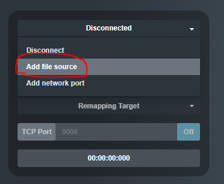
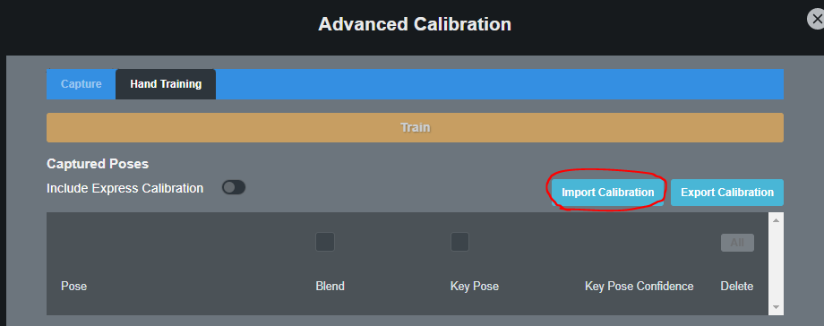

Playing Back Raw Recordings
After recording hand data you are also able to play back the animation in Hand Engine.
IMPORTANT:
Studio glove users: You must connect your gloves and run a calibration before switching to recording playback. The gloves can be turned off once the calibration is complete.
- Click on the glove connection dropdown and select Add file source.

Find the location where the recorded files are saved and select the raw sensor data CSV file matching the hand side you are working with.
If you already had a calibration loaded, the hand animation will begin playing as soon as the CSV file is loaded. Otherwise, continue to the following steps. - Go to Advanced Calibration, navigate to the Hand Training tab, and click Import Calibration.

- Find the location where the recorded files are saved and open the Cal_XXX.json file matching the hand side you are working with.
- Once the calibration has been loaded you will need to click on Train. The hand animation will begin straight away, the animation will be playing in a loop.
IMPORTANT:
Hand Engine is only able to import calibrations that contain poses captured, in order to be able to click on Train in Advanced Calibration.
NOTE:
You can update the calibration settings in the Hand Training tab as you please.